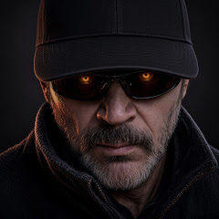

Destacado
YouTube · Viajes · Colombia
Decko World
El planeta de Decko.
Porque vivir también es dejar huellas.

Lo último en el canal
Videos reales tomados del RSS público de YouTube. Títulos, fechas y vistas no están inventados.
Cargando los videos del canal…
Viajes
Esta galería está pensada para crecer. Hoy hay tres piezas tomadas de videos reales del canal —sin inventar ciudades— y tres tarjetas de ejemplo, listas para completar más adelante.
Cargando destinos…
238Suscriptores
63Videos en el canal
77.436Vistas totales
2011Se unió el 7 oct 2011